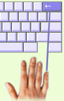

|
Korjausnäppäimellä voit mennä taaksepäin ja korjata virheitä. Testeissä saat käyttää korjausnäppäintä, ellei opettaja ole estänyt sen käyttöä. Korjausnäppäintä painetaan oikean käden pikkusormella. Se on melko vaikeaa ja hidastaa kirjoittamista. Älä siis käytä sitä liian paljon. |
 |